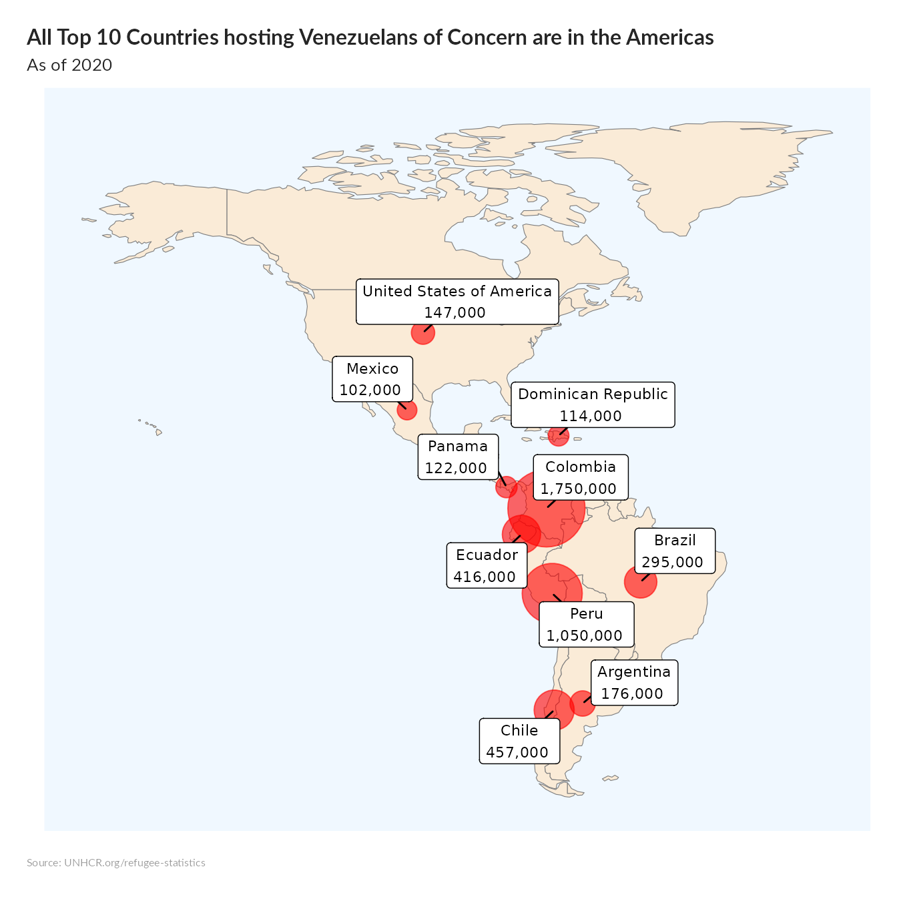

thisbureau <- "Americas"
lastyear <- max(unhcrdatapackage::end_year_population_totals_long$Year)
end_year_population_totals_long.asy <- dplyr::left_join( x= unhcrdatapackage::end_year_population_totals_long,
y= unhcrdatapackage::reference,
by = c("CountryAsylumCode" = "iso_3"))
## Map showing the venezuelan exodus
allVene <- end_year_population_totals_long.asy %>%
filter( Year == lastyear &
Population.type != "IDP" &
CountryOriginCode == "VEN"&
CountryAsylumCode != "VEN") %>%
group_by( CountryAsylumName, Latitude, Longitude) %>%
summarise(Value2 = sum(Value) ) %>%
mutate(Label = format(round(Value2, -3), big.mark=",")) %>%
# mutate(Label2 = unhcRstyle::format_si()Value2) %>% # unhcRstyle::format_si(100000000)
arrange(desc(Value2)) %>%
head(10) # %>%
## Change to robinson world projection
# mutate %>%
## Getting world map for mapping
world <-
rnaturalearth::ne_countries(scale = "small", returnclass = "sf") %>%
filter(continent == "North America" | continent == "South America")
## Remove Antartica
world <- world[ world$sov_a3 != "ATA", ]
# plot
allveneplot <- ggplot(data = world) +
geom_sf(fill = "antiquewhite", colour = "#7f7f7f", size = 0.2) +
#coord_sf(xlim = c(-25, 65), ylim = c(25, 75), expand = FALSE) + ## Clipping on Mediterranean Sea
geom_point(data = allVene, aes(x = Longitude, y = Latitude , size = Value2 ),
alpha = 0.6, colour = "red") +
scale_size_area( max_size = 20) +
ggrepel::geom_label_repel( data = allVene ,
mapping = aes(x = Longitude, y = Latitude,
label = stringr::str_glue(
"{CountryAsylumName}\n{Label} ") # how label displays
),
size = 3, # text size in labels
min.segment.length = 0)+ # show all line segments
# coord_sf(crs = "+proj=robin") +
labs(title = "All Top 10 Countries hosting Venezuelans of Concern are in the Americas",
subtitle = "As of 2020",
x = "",
y = "",
caption = "Source: UNHCR.org/refugee-statistics ") +
unhcRstyle::unhcr_theme(base_size = 8) + ## Insert UNHCR Style
theme(#panel.grid.major = element_line(color = gray(.5), linetype = "dashed", size = 0.5),
panel.grid.major = element_blank(),
panel.background = element_rect(fill = "aliceblue"),
axis.text.x = element_blank(),
axis.text.y = element_blank(),
legend.position = "none"
)
allveneplot 
```